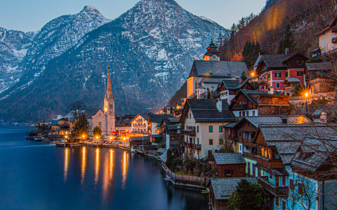

Budapest - Capital de Hungria
Esta es la ciudad conocida como perla del Danubio, una ciudad que enamora a primera visita, tanto de
día como de noche y no deja indiferente a ningún viajero.
Capital de Hungría, formada por la unión de las ciudades de Buda y Pest, separadas por el río
Danubio, la ciudad de Budapest está rodeada de imponentes edificios y monumentos históricos, cafés
con increíbles arquitecturas y sobre todo, fantásticos balnearios donde podrás relajarte después de
un día de visitas.
Para disfrutar de las mejores experiencias que ofrece la ciudad creemos que son necesarios un mínimo
de dos días, aunque te recomendamos añadir uno más para conocer la ciudad con más tranquilidad y
disfrutar de románticos paseos al atardecer por la orilla del Danubio.
Budapest, la impresionante capital de Hungría, es conocida por sus magníficas atracciones que
combinan historia, arquitectura y belleza natural. Entre las mejores atracciones se encuentra el
majestuoso Parlamento húngaro, un impresionante edificio gótico que se sitúa a orillas del río
Danubio. La Iglesia de San Matías, con su deslumbrante arquitectura gótica y su rica historia, es
otro punto destacado. El Bastión de los Pescadores ofrece vistas panorámicas de la ciudad y es un
lugar ideal para tomar fotografías. Los baños termales de Budapest, como Széchenyi y Gellért, son
famosos en todo el mundo por sus aguas curativas y sus impresionantes instalaciones. Por último, el
Puente de las Cadenas es un ícono de la ciudad y une las dos partes de Budapest con su elegante
diseño. Estas atracciones son solo una muestra del encanto que Budapest tiene para ofrecer
a sus visitantes.
Venecia - Ciudad de Italia
Venecia, la ciudad de los canales y los puentes, es famosa por su encanto romántico y su rica
historia. Entre sus mejores atracciones se encuentra la Plaza de San Marcos, una impresionante plaza
que alberga la majestuosa Basílica de San Marcos y el Palacio Ducal, con su deslumbrante
arquitectura y su importancia histórica. Los canales de Venecia son en sí mismos una atracción
principal, y un paseo en góndola es una experiencia inolvidable que permite disfrutar de la belleza
única de la ciudad desde el agua. El Puente de Rialto es otro punto destacado, con sus elegantes
arcos y sus animados mercados que ofrecen una amplia variedad de productos locales. Además, los
museos de Venecia, como la Gallerie dell'Accademia y el Palazzo Grassi, albergan invaluables obras
de arte que cautivan a los amantes del arte y la cultura. En resumen, Venecia es un tesoro de
atracciones que combinan historia, arte y belleza natural en un entorno verdaderamente único.
Burano y Murano son dos encantadoras islas situadas en la laguna de Venecia, conocidas por su
singular belleza y artesanía. En Burano, la atracción principal es su pintoresco y colorido pueblo
de pescadores, donde las casas de colores brillantes crean un paisaje encantador y fotogénico.
Además, Burano es famosa por su encaje de alta calidad, y los visitantes pueden explorar talleres
locales para ver a los artesanos en acción. Por otro lado, Murano es conocida en todo el mundo por
su exquisito cristal soplado. Los visitantes pueden visitar las fábricas de cristal para presenciar
demostraciones de soplado de vidrio y descubrir las impresionantes obras maestras creadas por
hábiles artesanos. Ambas islas ofrecen una experiencia única que combina la artesanía tradicional
con la belleza natural y la autenticidad de la vida isleña en la laguna de Venecia.
Praga -Capital de Chequia
Praga, la capital de la República Checa, es conocida como la "Ciudad de las Cien Torres" debido a su
impresionante horizonte dominado por iglesias, palacios y torres. La ciudad vieja de Praga es un
laberinto de calles empedradas, donde puedes encontrar el famoso Reloj
Astronómico del siglo XV, así como la imponente Iglesia de Nuestra Señora de Týn. El puente de
Carlos, con sus estatuas barrocas y sus magníficas vistas del río Moldava, es otro punto destacado.
El Castillo de Praga, una de las fortalezas más grandes del mundo, es una visita obligada. Dentro
del castillo se encuentra la Catedral de San Vito, un impresionante ejemplo de arquitectura gótica.
Además, el barrio judío de Josefov ofrece una mirada a la historia judía de la ciudad.Praga también
es famosa por su cerveza y su gastronomía tradicional checa. No te pierdas la oportunidad de probar
platos como el goulash, el svíčková (filete con salsa cremosa) y los deliciosos postres como el
trdelník.
Además, Praga alberga una gran cantidad de museos, teatros y galerías de arte. El Teatro Nacional de
Praga es un importante centro cultural, así como el Museo Nacional de Praga, que ofrece una visión
completa de la historia checa.
También es interesante mencionar que Praga ha sido escenario de películas famosas, como "Amadeus" y
"Blade II", y ha inspirado a numerosos escritores y artistas a lo largo de los años.
En cuanto a la vida nocturna, Praga tiene una animada escena con bares y clubes para todos los
gustos. La cerveza checa es famosa en todo el mundo, por lo que disfrutar de la vida nocturna
praguense es una experiencia única.
Viena-Capital de Austria
Viena es una ciudad fascinante con una rica historia y una impresionante escena cultural. Como la
capital de Austria, Viena es conocida por su arquitectura imperial, su música clásica y su deliciosa
repostería.
La ciudad está repleta de palacios y edificios históricos, como el Palacio de Schönbrunn, que fue la
residencia de verano de la familia imperial. La Catedral de San Esteban es otro punto destacado, con
su impresionante arquitectura gótica y sus vistas panorámicas desde la torre sur.
Viena es famosa por ser la cuna de grandes compositores como Mozart, Beethoven y Strauss, por lo que
la música clásica forma parte integral de la vida cultural vienesa. Puedes disfrutar de conciertos
en algunos de los teatros más famosos del mundo, como la Ópera Estatal de Viena y el Musikverein.
La ciudad también es conocida por su café vienés y su repostería, con delicias como el apfelstrudel,
el sachertorte y una gran variedad de pasteles y tortas.
Además, Viena tiene una vibrante escena artística contemporánea, con galerías de arte moderno y
espacios culturales innovadores.
La vida nocturna en Viena es variada y emocionante, con opciones para todos los gustos. La ciudad
ofrece desde elegantes cafés donde disfrutar de música en vivo hasta modernos bares y clubes
nocturnos.
Los vieneses son conocidos por su amor por la música, por lo que es común encontrar conciertos de
jazz, música clásica y otros géneros en vivo en diversos locales. Los bares de cócteles son
populares en la ciudad, y ofrecen una amplia gama de bebidas creativas en un ambiente sofisticado.
Milan -Ciudad de Italia
Milán, la capital de la región de Lombardía en Italia, es una ciudad llena de historia, elegancia y
modernidad. Conocida como la capital de la moda y el diseño, Milán es un destino imprescindible para
los amantes del arte, la arquitectura, la buena comida y las compras.
El imponente Duomo di Milano, una catedral gótica del siglo XIV, es uno de los principales
atractivos de la ciudad. Su intrincada fachada de mármol blanco y sus impresionantes vistas desde lo
alto hacen que sea una visita obligada para los turistas. Justo al lado se encuentra la famosa
Galería Vittorio Emanuele II, un magnífico centro comercial con techos abovedados y elegantes
boutiques de lujo.
Milán también es conocida por su escena artística y cultural. El Teatro Alla Scala es uno de los
teatros de ópera más famosos del mundo, donde se han presentado renombrados artistas y compositores
a lo largo de los siglos. Los amantes del arte pueden disfrutar de obras maestras en galerías como
la Pinacoteca di Brera y el Museo del Novecento.
En cuanto a la gastronomía, Milán ofrece una amplia variedad de delicias culinarias. Desde los
tradicionales risottos hasta los exquisitos platos de pasta, la cocina milanese es una experiencia
para los sentidos. No puedes dejar de probar el famoso plato "cotoletta alla milanese", una versión
local de la milanesa.
Para los amantes de las compras, Milán es un verdadero paraíso. La ciudad alberga tiendas exclusivas
de diseñadores internacionales en el Quadrilatero della Moda (el Cuadrilátero de la Moda), donde
encontrarás las últimas tendencias en moda y accesorios.
Por último, no podemos olvidar mencionar la vida nocturna en Milán. La ciudad ofrece una gran
variedad de bares, clubes y locales nocturnos que van desde elegantes coctelerías hasta animados
clubes de música electrónica.

Hallstatt - Pueblo de Austria
Hallstatt, un encantador pueblo situado en la región montañosa de Salzkammergut en Austria, es
conocido por su belleza natural, su rica historia y su atmósfera idílica. Este pintoresco destino es
famoso por sus casas de cuento de hadas que se reflejan en las aguas tranquilas del lago Hallstätter
See, creando una estampa inolvidable.
Construido sobre las laderas escarpadas de los Alpes, Hallstatt ha sido declarado Patrimonio de la
Humanidad por la UNESCO, lo que lo convierte en un lugar de gran interés tanto para los amantes de
la naturaleza como para los aficionados a la historia y la cultura.
El pueblo es un verdadero paraíso para los amantes del aire libre. Los visitantes pueden disfrutar
de impresionantes caminatas por los alrededores, explorar las cuevas de sal cercanas o tomar un
relajante paseo en barco por el lago. Además, la región ofrece actividades como el esquí en invierno
y la natación en verano, lo que la convierte en un destino atractivo durante todo el año.
La historia de Hallstatt se remonta a la Edad del Hierro, y los restos arqueológicos descubiertos en
la zona han llevado a la creación de una réplica del pueblo en China, mostrando la importancia
cultural e histórica de este lugar. Los viajeros interesados en conocer más sobre la rica herencia
de Hallstatt pueden visitar el Museo Beinhaus (la Casa de los Huesos) y explorar las antiguas minas
de sal que se encuentran en las cercanías.
La arquitectura tradicional del pueblo, con sus casas con entramados de madera y sus coloridas
fachadas, junto con las impresionantes vistas panorámicas de los Alpes, ofrecen innumerables
oportunidades para tomar fotografías espectaculares.
Lago Bled - Liubliana Ciudad de Eslovenia
El Lago Bled, ubicado en Eslovenia, es un destino de ensueño que combina la belleza natural con un
rico patrimonio cultural. Este idílico lago, rodeado de imponentes montañas y salpicado por la
icónica isla con la iglesia de la Asunción, ofrece una experiencia verdaderamente mágica para los
visitantes. La isla de Bled, con su iglesia barroca y su campanario, es el símbolo distintivo del
lago. Los
visitantes pueden tomar paseos en bote tradicionales llamados "pletnas" para llegar a la isla y
explorar este lugar único. La iglesia es un lugar popular para bodas y ofrece impresionantes vistas
panorámicas del lago y sus alrededores.
Los alrededores del lago Bled ofrecen una variedad de actividades al aire libre. Los amantes de la
naturaleza pueden disfrutar de caminatas por los senderos que bordean el lago, mientras que los más
aventureros pueden optar por actividades como el ciclismo de montaña, la equitación o el parapente
desde las alturas circundantes.
Además, el castillo de Bled, ubicado en lo alto de un acantilado con vistas al lago, es otro punto
de interés destacado. Esta fortaleza medieval ofrece una fascinante visión de la historia local y
unas vistas panorámicas impresionantes que valen la pena admirar.
La región de Bled también es conocida por sus aguas termales, lo que la convierte en un destino
ideal para relajarse y rejuvenecer. Los balnearios y spas cercanos ofrecen una amplia gama de
tratamientos y experiencias de bienestar que invitan a los visitantes a disfrutar de momentos de
tranquilidad y descanso.
La gastronomía eslovena se hace presente en los restaurantes locales que ofrecen platos
tradicionales como el "kremšnita", un pastel de crema especial originario de Bled. Además, los
mercados locales son excelentes lugares para probar productos frescos y delicias culinarias
regionales.
Salzburgo - Ciudad de Austria
Salzburgo, la ciudad natal de Mozart y declarada Patrimonio de la Humanidad por la UNESCO, es un
destino fascinante que combina historia, cultura y belleza natural. Ubicada a orillas del río
Salzach y rodeada por los Alpes, esta pintoresca ciudad ofrece una rica variedad de experiencias
para los visitantes.
El casco antiguo de Salzburgo, con su arquitectura barroca y calles adoquinadas, es un lugar
perfecto para sumergirse en la historia y la cultura. La Fortaleza Hohensalzburg, que se alza
majestuosamente sobre la ciudad, ofrece vistas panorámicas impresionantes y la oportunidad de
explorar una de las fortalezas medievales mejor conservadas de Europa.
Los amantes de la música no querrán perderse la oportunidad de visitar la casa natal de Wolfgang
Amadeus Mozart, que ahora es un museo dedicado a su vida y obra. Además, Salzburgo es famosa por sus
festivales de música clásica, como el Festival de Salzburgo, que atrae a amantes de la música de
todo el mundo.
Los jardines del Palacio Mirabell, con sus elegantes parterres y fuentes ornamentales, ofrecen un
remanso de tranquilidad en medio de la ciudad. Este lugar también es conocido por ser el escenario
de la famosa escena de "Do-Re-Mi" en la película "The Sound of Music".
Los alrededores de Salzburgo son igualmente impresionantes. El paisaje alpino cercano ofrece
oportunidades para practicar senderismo, ciclismo y esquí, dependiendo de la temporada. El
pintoresco pueblo de Hallstatt y los lagos alpinos son destinos populares para excursiones de un día
desde Salzburgo.
La gastronomía local es una delicia para los sentidos, con platos tradicionales como el "Schnitzel"
y postres como el "Strudel" que deleitarán a los paladares más exigentes. Los mercados locales
ofrecen la oportunidad de degustar productos regionales frescos y descubrir auténticos sabores
austriacos.